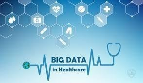

Big data analytics has helped healthcare improve by providing personalized medicine and prescriptive analytics, clinical risk intervention and predictive analytics, waste and care variability reduction, automated external and internal reporting of patient data, standardized medical terms and patient registries and fragmented point solutions. Some areas of improvement are more aspirational than actually implemented. The level of data generated within healthcare systems is not trivial. With the added adoption of mHealth, eHealth and wearable technologies the volume of data will continue to increase. This includes electronic health record data, imaging data, patient generated data, sensor data, and other forms of difficult to process data. There is now an even greater need for such environments to pay greater attention to data and information quality. "Big data very often means 'dirty data' and the fraction of data inaccuracies increases with data volume growth." Human inspection at the big data scale is impossible and there is a desperate need in health service for intelligent tools for accuracy and believability control and handling of information missed. While extensive information in healthcare is now electronic, it fits under the big data umbrella as most is unstructured and difficult to use. The use of big data in healthcare has raised significant ethical challenges ranging from risks for individual rights, privacy and autonomy, to transparency and trust. Big data in health research is particularly promising in terms of exploratory biomedical research, as data-driven analysis can move forward more quickly than hypothesis-driven research. Then, trends seen in data analysis can be tested in traditional, hypothesis-driven follow-up biological research and eventually clinical research.
